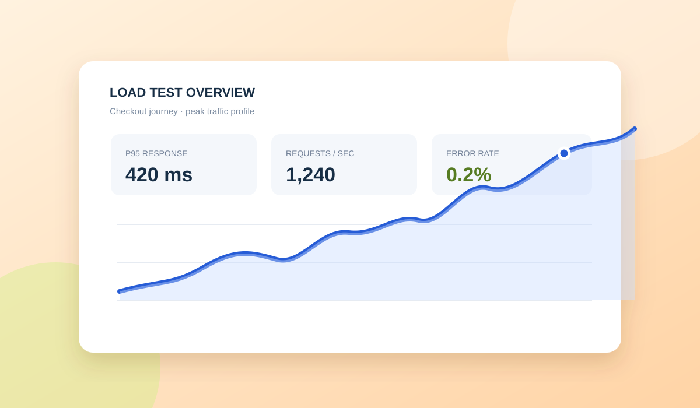
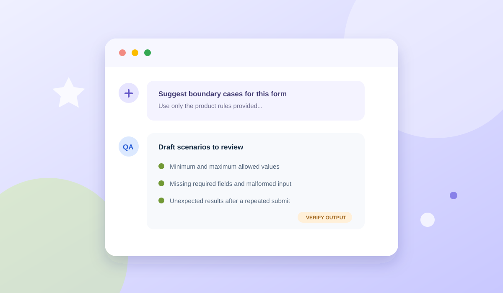
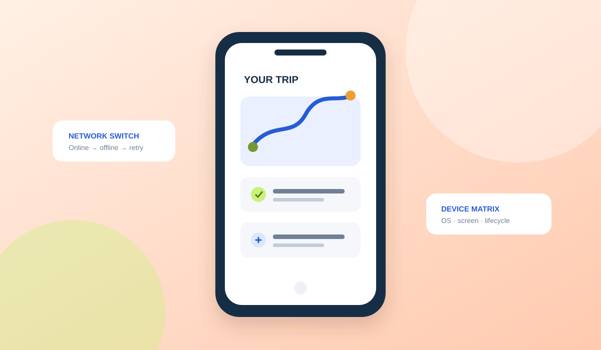

TESTATLAS LEARNING PATHS
Choose a course.
Learn one topic at a time.
Each course opens on its own page with focused lessons, practical examples, and a hands-on exercise.
 MANUAL TESTING
MANUAL TESTINGManual testing
Learn a repeatable way to understand a feature, choose useful checks, explore risks, and communicate what you find. No programming experience is required.
Open course guide → TEST AUTOMATION
TEST AUTOMATIONTest automation
Learn where automation helps, how to build stable checks, and how to maintain a suite that gives the team useful feedback.
Open course guide → API TESTING
API TESTINGAPI testing
Test the service contract directly: inputs, status codes, response data, authorization, and the edge cases that user interfaces may not expose.
Open course guide →
PERFORMANCE TESTINGPerformance testing
Plan a realistic load experiment, choose measurements that matter, and turn the results into an actionable conversation about capacity and user experience.
Open course guide →
CLAUDE AI TESTINGClaude AI testing
Use Claude as a thoughtful assistant for test planning and analysis, while keeping evidence, product context, and final decisions in the hands of the tester.
Open course guide → EXPLORATORY TESTING
EXPLORATORY TESTINGExploratory testing
Combine learning, test design, and execution in focused sessions. Build a trail of evidence as you investigate how a feature behaves in real use.
Open course guide →ADVANCED SECURITYSecurity testing
Build a risk-based security test approach for web applications. Examine trust boundaries, identity, permissions, input handling, and sensitive data using safe, authorized environments.
Open course guide → ADVANCED INCLUSION
ADVANCED INCLUSIONAccessibility testing
Evaluate whether people can use a product with different input and output methods. Combine keyboard, visual, semantic, and assistive technology checks with focused user journeys.
Open course guide →ADVANCED DELIVERYCI/CD quality engineering
Design a quality signal from commit to release. Balance fast feedback, dependable checks, environment confidence, and clear release decisions across a delivery pipeline.
Open course guide →
ADVANCED DEVICESMobile application testing
Build a practical mobile test matrix around devices, operating systems, connectivity, permissions, app lifecycle, and releases instead of trying every possible combination.
Open course guide →